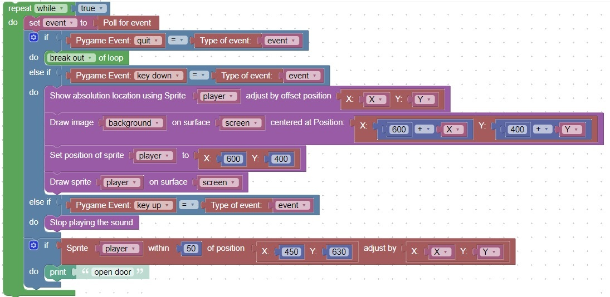

How to detect that a sprite is at a specific location
This code will show the absolute location of a sprite

You can also check the absolute location of a position on the background by opening the background image in mspaint.
The x,y location of the mouse is shown in the lower left corner.